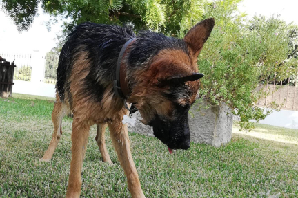

Loki
A Loki é uma cadela amorosa de 1 ano. Está desparasitada e esterilizada. É arraçada de Pastor Alemão e procura uma família que lhe dê muito amor e carinho. Foi deixada numa das instituições que apoiamos pelo dono devido a não ter condições para poder tratar dela, por isso procuramos alguém disposto a dar parte da sua atenção à Loki sendo que esta é bastante companheira.
| Nome | Loki |
|---|---|
| Espécie | Cão arraçado de Pastor Alemão |
| Género | Fêmea |
| Idade | 1 ano |
| Vacinas em dia | Sim |
| Desparazitado | Sim |
| Esterilizado | Sim |